z <- seq(-4, 4, length = 400)
acts <- cbind(sigmoid = 1 / (1 + exp(-z)), tanh = tanh(z), ReLU = pmax(z, 0), linear = z / 4)
matplot(z, acts, type = "l", lty = 1, lwd = 3, col = c("#003366", "#C0392B", "#27AE60", "gray50"),
ylab = expression(sigma(z)), main = "Activation functions")
legend("topleft", colnames(acts), col = c("#003366", "#C0392B", "#27AE60", "gray50"), lwd = 3, bty = "n")Deep Learning in R 🧠
MATH 4750 / MSSC 5750 Computational Statistics
Dr. Mehdi Maadooliat
Marquette University
MATH 4750 - Spring 2027
Deep Learning in R
Lecture A: myths and truths, anatomy of a neural network, a network from scratch
Lecture B: fully connected networks with Keras (MNIST)
Lecture C: convolutional neural networks, and beyond (RNN, embeddings, autoencoders)
Lecture A: Neural Network Fundamentals
Deep Learning: Myths and Truths
- Often presented as algorithms that “work like the brain”, that “think” or “understand”. Reality is far from this.
- AI: the effort to automate intellectual tasks normally performed by humans.
- ML: rather than programmers crafting rules by hand, can a computer learn the rules by looking at data?
- DL: ML with many successive layers of learned representations.
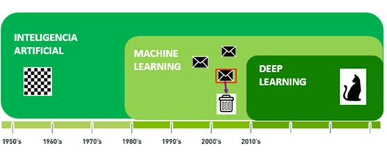
Classical Programming vs. Machine Learning
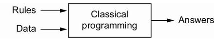
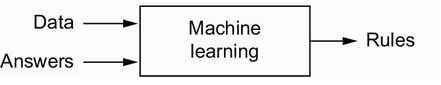
Recipe of an ML algorithm: input data points (sound files, images), examples of the expected output (transcripts, tags), and a way to measure the distance between current and expected output; this feedback signal adjusts the algorithm: learning.
Anatomy of a Neural Network
- Input data and corresponding targets
- Layers, combined into a network (model)
- The loss function: the feedback signal used for learning
- The optimizer: how learning proceeds (gradient descent via backpropagation)
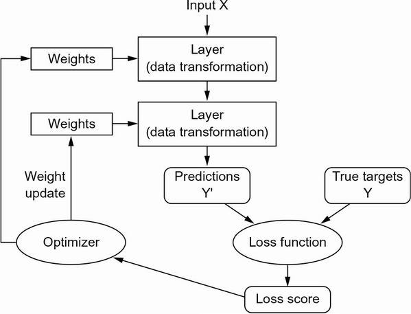
LeNet-5 and Why the 30-Year Gap
- 1989, Bell Labs: Yann LeCun combines convolutional networks with backpropagation for handwritten digits; LeNet read ZIP codes for the USPS and checks (32x32 pixels) for banks.
- 2011-2012: GPU-trained deep nets win ImageNet; AlexNet (Krizhevsky, Hinton) reaches 83.6% top-5 accuracy (vs 74.3% in 2011).
- Three forces: hardware, datasets and benchmarks, algorithmic advances (ReLU, dropout, better initialization and optimizers).
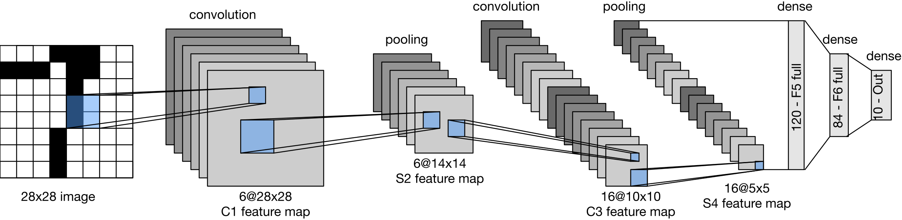
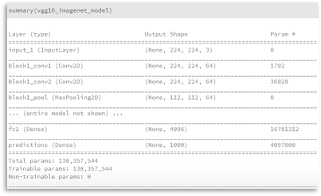
A Neuron and Activation Functions
A layer computes \(\mathbf{z}= \sigma(\mathbf{W}\mathbf{x}+ \mathbf b)\): an affine map followed by an elementwise activation \(\sigma\).
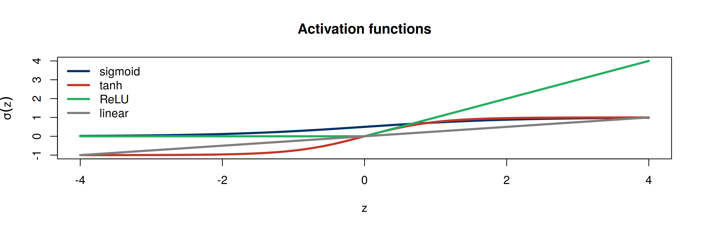
Linear Activation: Hidden Layers Disappear
\[ \mathbf{z}= \mathbf{W}_1\mathbf{x}+ \mathbf b_1,\qquad \mathbf{y}= \mathbf{W}_2\mathbf{z}+ \mathbf b_2 = (\mathbf{W}_2\mathbf{W}_1)\mathbf{x}+ (\mathbf{W}_2\mathbf b_1 + \mathbf b_2). \]
A network with linear activations is just a linear model, no matter how many layers. Nonlinear activations are what make depth useful.
Residual (Sur)Realism: The MU Logo Data
An “inverse problem” dataset: \(Y\) and five predictors constructed so that the residual plot of the linear model reveals a picture.
[1] 10118 6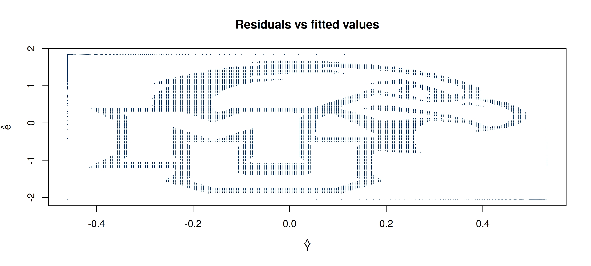
Regression with a Neural Network
A one-hidden-layer network with linear output (nnet, recommended package) should reproduce the linear fit:
(Intercept) X1 X2 X3 X4 X5
lm 0.9761 0.1886 0.1204 0.9477 0.0123 0.967
nnet 0.9761 0.1886 0.1204 0.9477 0.0123 0.967- With
neuralnet::neuralnet(Y ~ ., hidden = c(10, 10), act.fct = function(x) x), the product of the weight matrices recovers the same coefficients (previous years’ slides).
A Two-Layer Network from Scratch: Backpropagation
mlp_fit <- function(X, y, H = 10, lr = 0.05, epochs = 3000, seed = 4750) {
set.seed(seed); p <- ncol(X); n <- nrow(X)
W1 <- matrix(rnorm(p * H, sd = 1 / sqrt(p)), p, H); b1 <- rep(0, H)
W2 <- rnorm(H, sd = 1 / sqrt(H)); b2 <- 0; loss <- numeric(epochs)
for (e in 1:epochs) {
A <- X %*% W1 + matrix(b1, n, H, byrow = TRUE); Z <- tanh(A) # forward pass
yhat <- as.vector(Z %*% W2 + b2); r <- yhat - y
loss[e] <- mean(r^2)
g_yhat <- 2 * r / n # backward pass (chain rule)
gW2 <- crossprod(Z, g_yhat); gb2 <- sum(g_yhat)
gZ <- outer(g_yhat, W2); gA <- gZ * (1 - Z^2)
gW1 <- crossprod(X, gA); gb1 <- colSums(gA)
W1 <- W1 - lr * gW1; b1 <- b1 - lr * gb1; W2 <- W2 - lr * as.vector(gW2); b2 <- b2 - lr * gb2
}
list(predict = function(Xn) as.vector(tanh(Xn %*% W1 + matrix(b1, nrow(Xn), H, byrow = TRUE)) %*% W2 + b2),
loss = loss)
}Fitting a Nonlinear Function
set.seed(4750); x <- sort(runif(200, -3, 3)); y <- sin(2 * x) + 0.3 * x + rnorm(200, sd = 0.2)
fit <- mlp_fit(matrix(x), y, H = 15, lr = 0.1, epochs = 5000)
par(mfrow = c(1, 2))
plot(fit$loss, type = "l", log = "y", lwd = 2, xlab = "epoch", ylab = "training MSE", main = "Gradient descent")
plot(x, y, pch = 20, col = "gray50", main = "15 tanh hidden units")
lines(x, fit$predict(matrix(x)), lwd = 3, col = "#C0392B"); lines(x, sin(2 * x) + 0.3 * x, lty = 2, lwd = 2)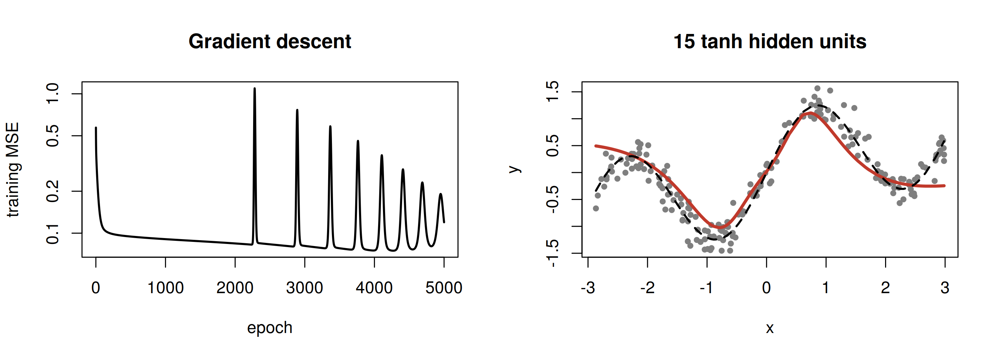
Some Neural Network Packages in R
| Package | Description |
|---|---|
nnet |
feed-forward networks with a single hidden layer; multinomial log-linear models |
neuralnet |
training by backpropagation; plots of the network |
keras3 / tensorflow |
interface to Keras 3 and TensorFlow (CPU/GPU/TPU) |
torch |
native R interface to libtorch (no Python needed) |
h2o, RSNNS, deepnet |
other toolkits |
torch for R installs without Python; keras3 needs a Python environment (e.g. conda env py39) with TensorFlow.
Lecture B: Fully Connected Networks with Keras
Why TensorFlow and Keras in R?
- TensorFlow: hardware independent (CPU, GPU, TPU), automatic differentiation, distributed execution, optimizers (SGD, Adam) that don’t need all data in RAM, deployable models.
- You define the graph in R; it is compiled, optimized, and executed; tensors flow between the nodes.
- Keras: a user-friendly API; same code on CPU or GPU; quick prototyping.
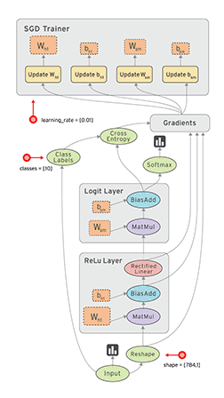
Real-World Examples of Data Tensors
| Tensor | Shape | Example |
|---|---|---|
| 2D | (samples, features) | tabular data |
| 3D | (samples, timesteps, features) | time series, text |
| 3D | (samples, height, width) | grayscale images (MNIST) |
| 4D | (samples, height, width, channels) | color images |
| 5D | (samples, frames, height, width, channels) | video |
Installing Keras
- GPU support requires NVIDIA drivers, CUDA, and cuDNN: see https://tensorflow.rstudio.com/install/.
Developing a Deep Network with Keras: Four Steps
- Define the training data: input tensors and target tensors.
- Define a network of layers (a model) mapping inputs to targets.
- Configure learning: a loss function, an optimizer, metrics to monitor (
compile()). - Iterate on the training data:
fit().
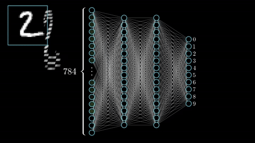
Step 1: Data Preprocessing (MNIST)
library(keras3)
# MNIST: 60,000 training and 10,000 test images of handwritten digits, 28 x 28 pixels
c(c(x_train, y_train), c(x_test, y_test)) %<-% dataset_mnist()
# flatten images and rescale gray levels into [0, 1]
x_train <- array_reshape(x_train, c(nrow(x_train), 784)) / 255
x_test <- array_reshape(x_test, c(nrow(x_test), 784)) / 255
# convert class vectors to binary class matrices (one-hot encoding)
y_train <- to_categorical(y_train, 10)
y_test <- to_categorical(y_test, 10)Step 2: Model Definition
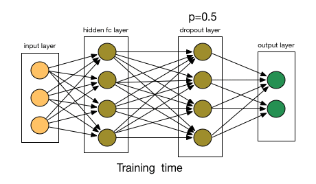
Number of parameters:
Softmax and Cross-Entropy
\[ \text{softmax}(\mathbf{z})_k = \frac{e^{z_k}}{\sum_{j=1}^{10}e^{z_j}},\qquad \text{loss} = -\sum_{k=1}^{10}y_k\log\hat p_k\ \ (\texttt{categorical\_crossentropy}). \]
[1] 0.045 0.016 0.007 0.900 0.002 0.006 0.006 0.006 0.006 0.006[1] 0.1059- Multi-class (one label per image): softmax + categorical cross-entropy. Multi-label (several labels per image): sigmoid outputs + binary cross-entropy.
Multi-Class vs. Multi-Label Classification
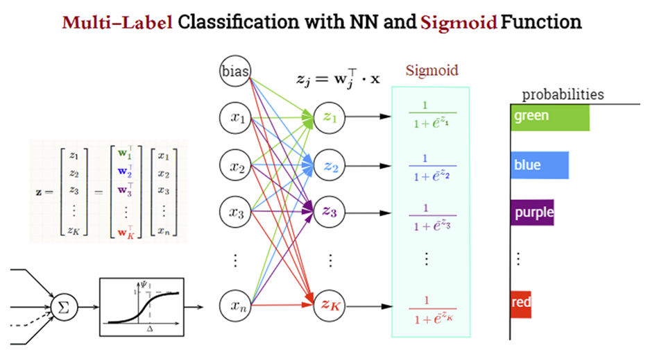
Steps 3-4: Compile and Fit
model |> compile(
loss = "categorical_crossentropy",
optimizer = optimizer_rmsprop(),
metrics = c("accuracy")
)
history <- model |> fit(
x_train, y_train,
batch_size = 128, # feed 128 samples at a time
epochs = 10, # traverse the training data 10 times
validation_split = 0.2 # hold out 20% for validation
)
plot(history)compile()converts the layers to a TensorFlow graph, attaches the loss and optimizer, and arranges metric collection.
Evaluation and Prediction
An FCN You Can Run Now: nnet on Handwritten Digits
Same workflow (train/test split, softmax output, cross-entropy loss, weight decay = \(\ell_2\) penalty) on a small simulated 4-class problem, with nnet:
set.seed(4750)
centers <- matrix(c(0, 0, 3, 0, 0, 3, 3, 3), ncol = 2, byrow = TRUE)
lab <- sample(1:4, 800, replace = TRUE)
X <- centers[lab, ] + matrix(rnorm(1600, sd = 1.1), ncol = 2)
dat <- data.frame(x1 = X[, 1], x2 = X[, 2], class = factor(lab))
tr <- sample(800, 600)
fit_nn <- nnet(class ~ ., data = dat[tr, ], size = 8, decay = 1e-3, maxit = 500, trace = FALSE) # softmax output
mean(predict(fit_nn, dat[-tr, ], type = "class") == dat$class[-tr]) # test accuracy[1] 0.835g <- expand.grid(x1 = seq(-3, 6, length = 150), x2 = seq(-3, 6, length = 150))
g$pred <- predict(fit_nn, g, type = "class")
ggplot() + geom_raster(aes(x1, x2, fill = pred), data = g, alpha = .35) +
geom_point(aes(x1, x2, color = class), data = dat[-tr, ], size = 1.5) + coord_equal() +
labs(title = "Decision regions of a one-hidden-layer softmax network")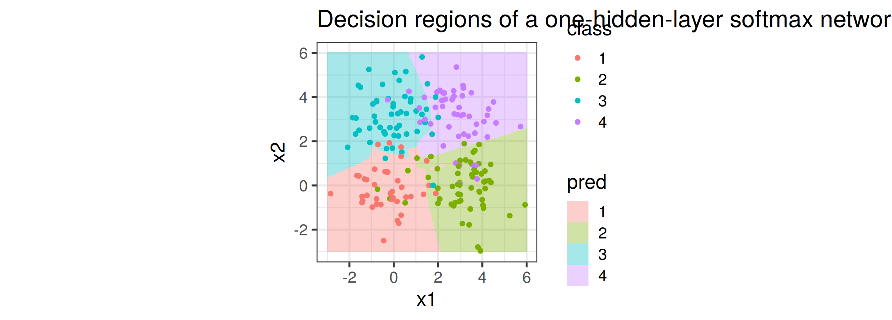
The Keras API: Layers
- 90+ layers (and you can write your own):
- Dense:
layer_dense(units = 64, kernel_regularizer = regularizer_l1(0.01))(ridge/lasso penalties again!) - Convolutional:
layer_conv_2d(),layer_max_pooling_2d() - Recurrent:
layer_simple_rnn(),layer_gru(),layer_lstm() - Embedding:
layer_embedding() - Regularization:
layer_dropout(),layer_batch_normalization()
- Dense:
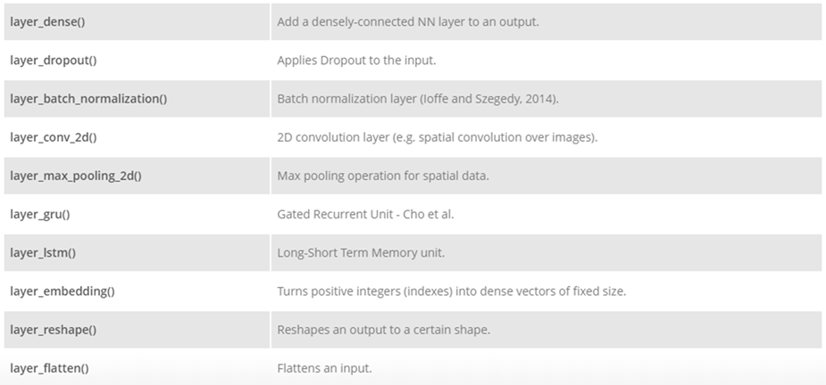
Lecture C: Convolutional Neural Networks
Why Not Fully Connected Networks for Images?
- Too many weights: a \(100\times140\times3\) color image has 42,000 inputs; 100 hidden nodes need 4,200,000 weights in the first layer alone \(\Rightarrow\) more data needed, overfitting, slow training.
- Flattening destroys spatial structure: neighboring pixels are correlated in 2-D.
Convolution uses small filters shared across the image: few parameters, local and translation-invariant features.
Convolution in 1-D
In deep learning “convolution” is really cross-correlation (no flip): \((x * w)_i = \sum_k x_{i+k}w_k\).
Convolution in 2-D: Feature Maps
conv2d <- function(img, k, stride = 1, pad = 0) {
if (pad > 0) { img2 <- matrix(0, nrow(img) + 2 * pad, ncol(img) + 2 * pad)
img2[(pad + 1):(pad + nrow(img)), (pad + 1):(pad + ncol(img))] <- img; img <- img2 }
f <- nrow(k); out_r <- (nrow(img) - f) %/% stride + 1; out_c <- (ncol(img) - f) %/% stride + 1
out <- matrix(0, out_r, out_c)
for (i in 1:out_r) for (j in 1:out_c) {
r <- (i - 1) * stride + 1; c <- (j - 1) * stride + 1
out[i, j] <- sum(img[r:(r + f - 1), c:(c + f - 1)] * k)
}
out
}
img <- volcano[seq(1, 87, 2), seq(1, 61, 2)] / max(volcano)
sobel_x <- matrix(c(-1, 0, 1, -2, 0, 2, -1, 0, 1), 3, byrow = TRUE)
fm <- conv2d(img, sobel_x); relu <- pmax(fm, 0)
par(mfrow = c(1, 3), mar = c(1, 1, 2, 1))
image(img, axes = FALSE, main = "input", col = gray.colors(50)); image(fm, axes = FALSE, main = "conv (Sobel x)", col = hcl.colors(50))
image(relu, axes = FALSE, main = "ReLU(conv)", col = hcl.colors(50))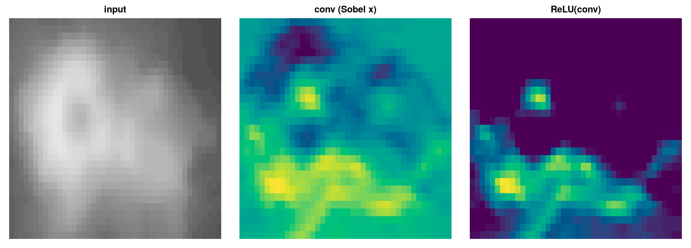
Stride, Padding, and Output Size
\[ \text{Output size} = \frac{N - F + 2P}{S} + 1 \]
[,1]
stride1 5.000
stride2 3.000
stride3 2.333
pad1 7.000[1] 3 3[1] 7 7- Without padding the volume shrinks quickly (\(32\to28\to24\) with \(5\times5\) filters); zero padding keeps the size.
- Common settings: \(F = 3, S = 1, P = 1\); \(F = 5, S = 1, P = 2\); number of filters \(K = 32, 64, 128\).
Max Pooling
Downsample each feature map: \(2\times2\) windows, stride 2, keep the maximum (\(100\times100\times128\to50\times50\times128\)).
maxpool <- function(m, f = 2, s = 2) {
r <- (nrow(m) - f) %/% s + 1; c <- (ncol(m) - f) %/% s + 1
outer(1:r, 1:c, Vectorize(function(i, j) max(m[((i - 1) * s + 1):((i - 1) * s + f), ((j - 1) * s + 1):((j - 1) * s + f)])))
}
m <- matrix(c(1, 1, 2, 4, 5, 6, 7, 8, 3, 2, 1, 0, 1, 2, 3, 4), 4, byrow = TRUE)
m; maxpool(m) [,1] [,2] [,3] [,4]
[1,] 1 1 2 4
[2,] 5 6 7 8
[3,] 3 2 1 0
[4,] 1 2 3 4 [,1] [,2]
[1,] 6 8
[2,] 3 4CNN Architecture: Review
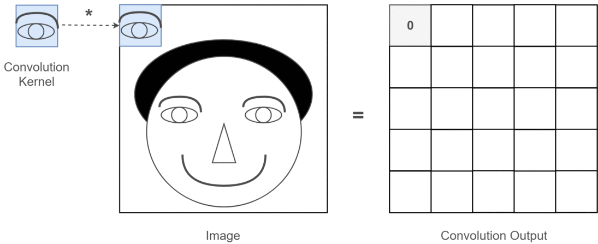
- Input: raw pixels, e.g. \(32\times32\times3\).
- Conv layer: \(K\) filters \(\Rightarrow\) \(32\times32\times K\) feature maps (learned features, no hand-designed features).
- ReLU: elementwise \(\max(0,x)\); size unchanged.
- Pooling: spatial downsampling, e.g. \(16\times16\times K\).
- Fully connected + softmax: class probabilities (e.g. doors 0.1, stairs 0.1, signs 0.8).
A CNN for MNIST in Keras
x_train <- array_reshape(x_train, c(nrow(x_train), 28, 28, 1)) / 255 # keep the 2-D structure!
cnn <- keras_model_sequential(input_shape = c(28, 28, 1)) |>
layer_conv_2d(filters = 32, kernel_size = c(3, 3), activation = "relu") |>
layer_max_pooling_2d(pool_size = c(2, 2)) |>
layer_conv_2d(filters = 64, kernel_size = c(3, 3), activation = "relu") |>
layer_max_pooling_2d(pool_size = c(2, 2)) |>
layer_flatten() |>
layer_dropout(rate = 0.5) |>
layer_dense(units = 10, activation = "softmax")
cnn |> compile(loss = "categorical_crossentropy", optimizer = "adam", metrics = "accuracy")
cnn |> fit(x_train, y_train, batch_size = 128, epochs = 15, validation_split = 0.1)conv1 conv2 dense
320 18496 16010 Far fewer parameters than the 235,146 of the FCN, and about 99% test accuracy. Demo: https://keras3.posit.co/articles/examples/vision/mnist_convnet.html.
Beyond CNNs: Recurrent Networks and Embeddings
rnn <- keras_model_sequential() |>
layer_lstm(units = 128, input_shape = c(timesteps, features)) |>
layer_dense(units = 1, activation = "sigmoid")
txt <- keras_model_sequential() |>
layer_embedding(input_dim = 10000, output_dim = 8) |>
layer_flatten() |>
layer_dense(units = 1, activation = "sigmoid")- RNN/LSTM: sequences, long-term dependencies (sentiment, forecasting)
- Embeddings: dense word vectors learned jointly with the task, or pre-trained (word2vec, GloVe)
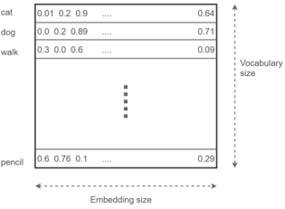
Autoencoders: Nonlinear PCA
ae <- keras_model_sequential(input_shape = c(784)) |>
layer_dense(units = 64, activation = "relu") |>
layer_dense(units = 32, activation = "relu") |> # bottleneck
layer_dense(units = 64, activation = "relu") |>
layer_dense(units = 784, activation = "sigmoid")
ae |> compile(loss = "mse", optimizer = "adam")
ae |> fit(x_train, x_train, epochs = 20) # input = target- With linear activations and MSE loss, an autoencoder spans the same subspace as PCA (deck 08)!
- Applications: dimension reduction, denoising, anomaly detection, inpainting; functional autoencoders for curves.
Advanced Topics and Deployment
- Transfer learning:
application_resnet50(), fine-tuning pre-trained networks - Custom layers and callbacks (early stopping:
callback_early_stopping()) - Generative models: variational autoencoders, GANs, text generation
- Saving and loading:
save_model(model, "model.keras"),load_model() - Deployment: Plumber APIs, TensorFlow Serving, Shiny (deck 10)
Python Supplement: The Same FCN in Keras (Python)
import keras
(x_train, y_train), (x_test, y_test) = keras.datasets.mnist.load_data()
x_train = x_train.reshape(-1, 784) / 255
model = keras.Sequential([
keras.Input(shape=(784,)),
keras.layers.Dense(256, activation="relu"), keras.layers.Dropout(0.4),
keras.layers.Dense(128, activation="relu"), keras.layers.Dropout(0.3),
keras.layers.Dense(10, activation="softmax")])
model.compile(loss="sparse_categorical_crossentropy", optimizer="rmsprop", metrics=["accuracy"])
model.fit(x_train, y_train, batch_size=128, epochs=10, validation_split=0.2)The R keras3 code is a thin layer over exactly this Python library.
Summary and Readings
- A network = layers (affine map + nonlinear activation) + loss + optimizer; trained by backpropagation + (stochastic) gradient descent.
- Linear activations collapse to a linear model; depth needs nonlinearity.
- Keras workflow: data tensors \(\rightarrow\)
keras_model_sequential()\(\rightarrow\)compile()\(\rightarrow\)fit()\(\rightarrow\)evaluate()/predict(). - CNNs: shared local filters, stride, padding, pooling; far fewer parameters than FCNs for images.
- F. Chollet, T. Kalinowski, J. J. Allaire, Deep Learning with R, 2nd ed., Manning.
- Keras for R: https://keras3.posit.co/; cheatsheet: https://rstudio.github.io/cheatsheets/html/keras.html
- Stanford CS231n notes: https://cs231n.github.io/convolutional-networks/